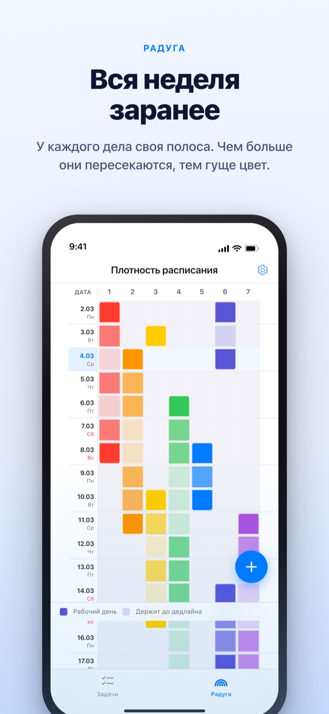
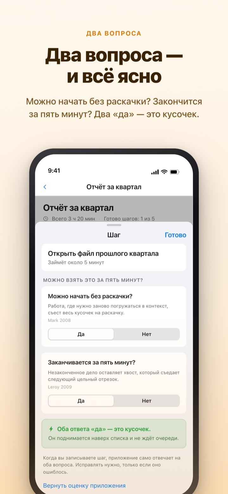
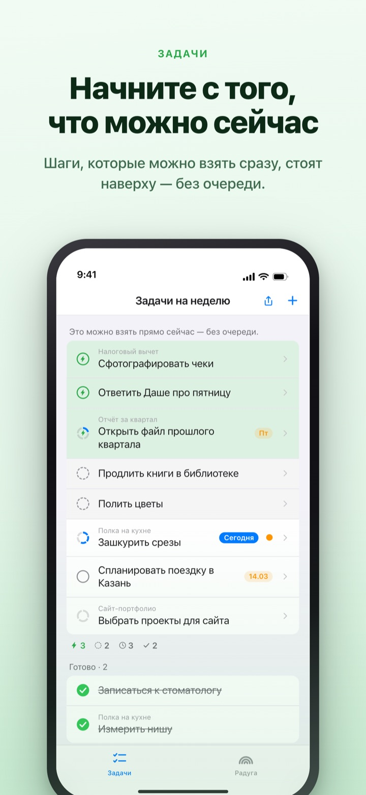
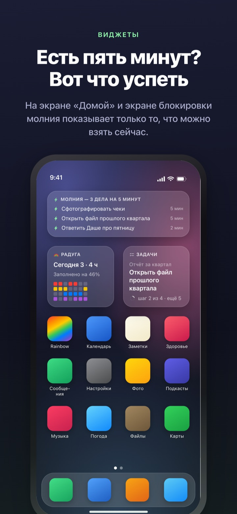

Видеть тяжёлую неделю заранее.
Не терять свободные пять минут.
Чем сильнее дела накладываются друг на друга, тем гуще цвет радуги. Разбейте большую задачу на шаги, и тот, что можно сделать в перерыве, уже ждёт наверху.
Радуга, разбивка задач, таймер и синхронизация с Mac бесплатны.

Попробуйте сами
«Отчёт за III квартал» уже разбит на пять шагов. Выберите шаг, поменяйте время или переверните ответ. Только шаг с двумя «да» становится кусочком, который можно сделать за пять минут.
В календаре вроде пусто, а неделя не даёт вздохнуть?
Календарь показывает, есть ли что-то в расписании, но не то, сколько всего навалено сверху. Что три дедлайна пришлись на одну неделю, понимаешь, только оказавшись в ней, а пять свободных минут уходят на перечитывание списка дел. Rainbow of Desire рисует неделю сеткой, затемняет места, где дела накладываются, и откладывает в сторону шаги, которые помещаются в паузу.
Два вопроса, и всё ясно
Когда вы разбиваете большую задачу, каждому шагу задаются два вопроса. Можно начать без раскачки? Заканчивается за пять минут?
Кусочек получается только при двух «да». Приложение отвечает первым, опираясь на время и слова, а вы переворачиваете ответ, только если он неверен.

Появилась пауза? Смотрите наверх
Смахните задачу вправо, чтобы поставить молнию, и она встанет наверх без очереди. Не нужно перечитывать весь список.
Ждут ли шаги друг друга, решается один раз для группы. «По порядку» выводит первый незавершённый шаг, а «Любой порядок» выводит кусочек, который можно взять прямо сейчас.

Видно, не открывая приложение
Таймер считает до момента, когда заканчивается событие, а оставшееся время видно и в Dynamic Island, и на экране блокировки.
Виджеты для экрана «Домой» и экрана блокировки показывают текущую задачу, то, что уместится в пять минут, и радугу этой недели. (Виджеты входят в Pro)

Начать можно в три шага
- 1
Проведите событие
Нажмите и удерживайте пустую клетку в день начала, затем коснитесь дня окончания, и на радуге появится линия.
- 2
Разбейте большое
Коснитесь задачи, запишите шаги и выберите время. На два вопроса приложение ответит само.
- 3
В паузе смотрите наверх
Кусочки и задачи с молнией собираются наверху без очереди.
Что вы увидите на экране
- Тёмная клетка · светлая клетка
- дни, когда вы действительно этим занимаетесь, и остаток срока до даты окончания
- Заполненный ряд
- день, когда столько всего идёт параллельно, что одна задержка сдвигает весь день
- Кусочек
- «да» на оба вопроса; берите, когда есть пять минут
- Короткий отрезок
- раскачка не нужна, но в кусочек не уложиться; делается за один присест
- Цельный отрезок
- нужна раскачка или 45 минут и больше; ставьте в отведённое время
- Молния
- ваша собственная метка «прямо сейчас»; поднимается наверх
- По порядку · Любой порядок
- ждут ли шаги друг друга, задаётся один раз для группы
- Журнал возвращённого времени
- итог недели: оставшееся, возвращённое время и отдых, отдельно и без суммирования
Время складывается снизу вверх: время задачи равно сумме её шагов.
Всё, что нужно на сегодня, бесплатно
Бесплатно
- Радуга (сетка плотности расписания)
- Разбивка задач на шаги и два вопроса
- Молния и порядок шагов
- Таймер в Dynamic Island и на экране блокировки
- Синхронизация с Rainbow Craft для Mac через iCloud
- Журнал за последние две недели
Rainbow Plus · Rainbow Pro
- Plus: статистика событий и журнал глубже двух недель
- Pro: всё из Plus, плюс виджеты для экрана «Домой» и блокировки
- Pro: импорт из Календаря с постоянным отображением
- Pro: доступ к событиям только для просмотра
- Pro: заодно открывает Rainbow Craft Pro на Mac
Каждый вариант доступен как годовая подписка или разовая покупка навсегда
Платить нужно только за взгляд на прошедшие недели и за вывод данных за пределы приложения. Если вы раньше купили Pro или у вас осталась месячная подписка, вы по-прежнему в Pro.
Частые вопросы
Нужен ли аккаунт или iCloud?
Если пользоваться одному, нет. Регистрации нет, всё хранится на устройстве. Для других устройств, приложения для Mac или совместного доступа войдите в iCloud.
Приложение неверно ответило на вопрос.
Коснитесь шага и переключите «Да» или «Нет». Ваш ответ всегда важнее оценки приложения. Чтобы снова доверить решение приложению, нажмите «Вернуть оценку приложения». Шаг без времени не считается кусочком: приложение не знает, уложится ли он в пять минут.
Можно ли делиться с другими?
По ссылке-приглашению можно открыть свои события только для просмотра (Pro) или общий список дел, который вы и приглашённые читаете и правите вместе. Присоединиться может любой, у кого есть ссылка, поэтому отправляйте её только тем, кому нужно. К Семейному доступу Apple это отношения не имеет.
Видны ли события из Календаря?
События из выбранных календарей показываются на радуге и в дневном виде (Pro). Приложение только читает их и ничего туда не записывает.
Можно ли отмечать задачи в виджете?
Виджеты только для просмотра. Коснитесь виджета, откроется список задач, и отметьте там.
Приложение для Mac покупается отдельно?
Rainbow Craft выходит отдельным приложением для macOS в Mac App Store. С одним аккаунтом iCloud задачи и планы на неделю синхронизируются сами, и это бесплатно.
Мои старые задачи сохранились?
Да. Задачи, шаги и заданное время остаются на месте. Метки старых условий начала приложение заново оценивает двумя вопросами.
Где хранятся мои данные?
Сервера нет. Всё лежит на вашем устройстве и в вашем личном iCloud, разработчик этого не видит. Без рекламного идентификатора и геолокации. Приложение отправляет только анонимную статистику использования, по которой вас не узнать; её можно отключить в Настройках.
Как отменить подписку?
В Настройках > Аккаунт Apple > Подписки. Если не отменить не позднее чем за 24 часа до конца периода, она продлится по той же цене. Покупка навсегда оплачивается один раз.
Что-то не получается или выглядит странно? Напишите на leeo@kakao.com. В настройках приложения тоже есть способ связаться.